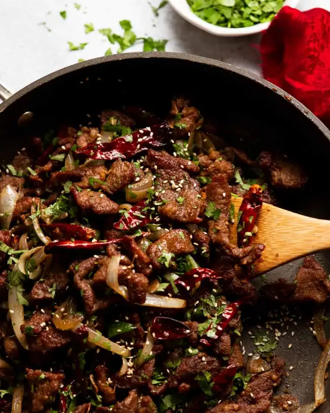

Xinjiang Cumin Lamb Stir Fry

Description
Succulent pieces of lamb generously flavoured with a cumin-sichuan pepper spice mix, golden on the outside and astonishingly tender inside.
This is a dish from the Xinjiang province of China where the food is heavily influenced by food of the Middle East,
reflecting the predominantly Muslim population. It's an absolute dead ringer for the ones I've had at restaurants, quick to make, and so good
I couldn't stop eating it straight out of the pan.
Ingredients
- 500g/ 1 lb boneless lamb leg meat (or rump)
- 1 tbsp soy sauce
- 1 tbsp Chinese cooking wine
- 1/2 tsp cooking/kosher salt
- 1 1/4 tsp baking soda
- 2 tbsp cornflour / cornstarch
- 2 tbsp cumin powder
- 1/2 tsp white sugar
- 1/2 tsp ground Sichuan pepper
- 4 tbsp vegetable oil
- 1/2 cup dried Chinese chillis
- 1 onion
- 2 tbsp finely minced ginger
- 5 cloves garlic
- 1/2 cup coriander/cilantro
- 1 tsp toasted sesame seeds
- Plain rice
Steps
- Marinade - Combine lamb, soy sauce, Chinese cooking wine, salt, baking soda and cornflour in a mixing bowl.
Mix well then set aside for marinade for 30 minutes (counter fine).
- Spice mix - Mix the ingredients in a small bowl.
- Cook lamb - Heat 3 tablespoons of the oil in a large non-stick skillet (30cm/1") over medium-high heat until hot.
Add half the lamb and spread out in a single layer. Leave for 30 seconds then, using 2 wooden spoons, toss for a further 1 minute until the lamb is slightly golden.
Remove onto a plate then repeat with remaining lamb (you shouldn't need more oil).
- Sauté aromatics - Heat the remaining 1 tablespoon of oil. Add the dried chilli, ginger and garlic.
Stir for 10 seconds to release flavour, then add the onion. Cook for 2 minutes until the onion just starts to soften.
- Spiced lamb - Add the cooked lamb then sprinkle the spice mix over. Toss well to evenly coat.
- Finish dish - Add the cilantro, sesame seeds and toss. Serve over rice! (Note: the dried chillies are not meant to be eaten.)